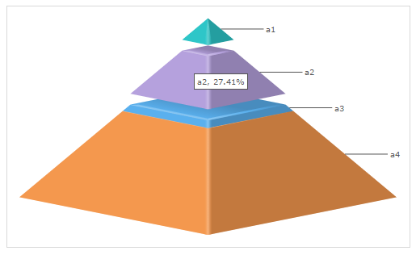

25.FwPyramidChart
수정 일자 버전 (SP2)
WebSquare5 Studio : 20180117_1349_x86_B
WebSquare5 Engine : 5.0_2.2982B.20180223.154326_1.5
FwPyramidChart는 FusionWidget Wrapper 컴포넌트입니다. FusionWidgets의 데이터는 실제 차트에 보여줄 값과 스타일 옵션들이 하나로 결합되어 있는 형태입니다. WebSquare5에서는 이를 분리하여 차트를 쉽게 Customizing 할 수 있도록 API를 지원합니다.
25.1Property
Property | Description |
|---|---|
accessibility | 해당차트의 접근성 지원여부를 결정합니다. (기본값은 false) |
ref | binding할 dataList를 넣습니다. |
labelNode | FwPyramidChart의 lable 데이터로 사용할 DataCollection의 column의 ID값. 공백 일 경우 DataCollection의 첫 번째 column이 자동 셋팅 됩니다. |
seriesNode SP2 | seriesType이 simple 일 경우, fwPyramidChart의 value 데이터로 사용할 DataCollection의 column의 ID값. 공백 일 경우 DataCollection의 dataType이 number인 column이 자동 셋팅 됩니다. |
seriesType | dataList 모양에 따라 advanced, simple로 나누어 집니다. |
25.2브라우저 캡쳐화면

[그림 25-1]01
25.3주의사항 및 Tip
FwPyramidChart 의 디자인은 css 로 변경하는것이 아니라 차트가 제공하는 옵션에서 정의합니다. 변경방법은 기술지원에서 문의바랍니다.
DataCollection 만들고 디자인뷰에서 해당컴포넌트를 더블클릭하여 ref, labelNode, valueNode 등 연결해야 됩니다.